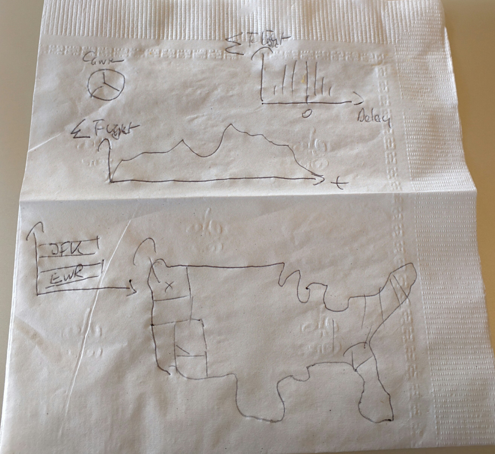

Interactive graphics with D3, Crossfilter, and DC
JSUnconf 2016
Worlds, not Stories
Credit for coining the term goes to @moritz_stefaner: Worlds, not Stories: data visualization as a macroscope
Interactive Visualization is not about
consuming stories
Interactive Visualization is about
exploring the world
My Question for today: What can we learn from domestic US air-traffic data?
The data
// this is how the data for our flights looks like
console.log(flights[0]);
{
"Month": "9", // part of timestamp (year implied)
"DayofMonth": "5", // part of timestamp (year implied)
"UniqueCarrier": "US", // categorical
"AirTime": "67", // numerical
"ArrDelay": "22", // numerical
"DepDelay": "31", // numerical
"Origin": "MCO", // categorical
"Dest": "CLT", // categorical
"Distance": "468", // numerical
"Cancelled": 0 // categorical
}
D3.js
- http://d3js.org/
- Transform your data into visualizations in the browser
- Style of programming declarative
- Main field of use are diagrams using SVG (but D3 is not limited to that)
- Data is bound to SVG elements which change once the data changes
D3 Example Code
var updateSelection = d3.select("body") // select the body tag
.selectAll("p") // select all p tags which are children
.data([4, 8, 15, 16, 23, 42]) // bind elements with data
.text(function (d) { // data gets passed in
return "I’m number " + d + "!"; // result gets displayed
})
.style("font-size", function (d) {
return 2 * d + "px";
});
<p>First p</p>
<p>Second p</p>
<p>Third p</p>

D3.js: Dynamic graphics in the browser

Crossfilter: Filtering millions of data sets in real time
- http://square.github.io/crossfilter/
- Can filter up to millions of data sets in real time in the browser
- Data sets are indexed when loaded
- You specify what you want to filter using dimensions
Creating a Crossfilter
// creating a new crossfilter (multi-dimensional dataset)
flight = crossfilter(flights);
console.log(flight.size()); // 490698
Creating Dimensions
// creating a dimension for all carriers of all flights
// data of dimension needs to be comparable
carrier = flight.dimension(function (d) {
return d.UniqueCarrier;
});
// dates properly constructed
date = flight.dimension(function (d) {
return new Date(2001, d.Month - 1, d.DayofMonth);
});
// early coercion is a good idea for better performance
airTime = flight.dimension(function (d) {
return parseInt(d.AirTime);
});
Reducing Dimensions
// group() reduces this dimension to a group
// you can also supply a mapping function
// identity is used as default
var distrinctCarriersGroup = carrier.group();
console.log("Distinct carriers: " + distrinctCarriersGroup.size());
// 12
// all() returns all grouped results as an array
var distinctCarriers = distrinctCarriersGroup.all();
var carrierNames = distinctCarriers.map(function (carrier) {
// contain key and value
return carrier.key;
});
console.log(carrierNames);
// ["AA", "AQ", "AS", "CO", "DL", "HP",
// "MQ", "NW", "TW", "UA", "US", "WN"]
Filtering
// filter just for TW
carrier.filter("TW");
// groupAll() creates a group intersecting all current filters
console.log("TW flights", flight.groupAll().value()); // 19427
// dimensions are stateful: result is a combination of all filters
origin.filter("EWR");
console.log("coming from EWR", flight.groupAll().value()); // 179
dest.filter("STL");
console.log("going to STL", flight.groupAll().value()); // 179
// this resets the filter on carrier
carrier.filterAll();
console.log("all flights from EWR to STL", flight.groupAll().value());
// 203
dc.js: Charting with D3 and Crossfilter
- http://dc-js.github.io/dc.js/
- Prebuilt integration of D3 and Crossfilter
- offers a couple of diagram types that are useful for interactive big data
- bar
- pie
- many more
Graphical Encodings

http://strataconf.com/big-data-conference-ny-2015/public/schedule/detail/43411
Initial Design
Order
Ordering Values: Possisbly first pie chart ever

http://blog.visual.ly/12-great-visualizations-that-made-history/
Order (Part #1): Display Carriers as a Pie Chart

Code for creating the pie chart
var pieChartCarriers = dc.pieChart("#pie");
pieChartCarriers
.slicesCap(5)
.dimension(carrier)
.group(carrier.group().reduceCount());
Connect
Connect (Part #2): Origin, Destination, Carriers combined

Time
Time Series: London Underground ad from 1928

Time Series (Part #3): Filtering using Brushes

Code for creating the line chart
var chart = dc.lineChart("#series");
chart
.dimension(date)
.group(date.group())
.brushOn(true));
Map
Map (Part #4): All flights from Hawaii

Code for creating the map
var stateOriginMap = dc.geoChoroplethChart("#state-origin-map");
stateOriginMap.width(500)
.height(250)
.dimension(stateOrigin)
.group(stateOrigin.group().reduceCount())
.colors(d3.scale.quantize().range(["#E2F2FF", "#C4E4FF", "#9ED2FF", "#81C5FF", "#6BBAFF", "#51AEFF", "#36A2FF", "#1E96FF", "#0089FF", "#0061B5"]))
.colorDomain([0, 20000]));